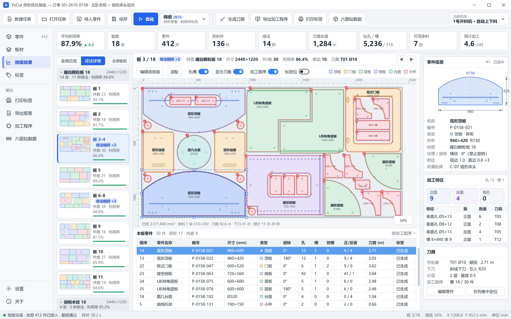
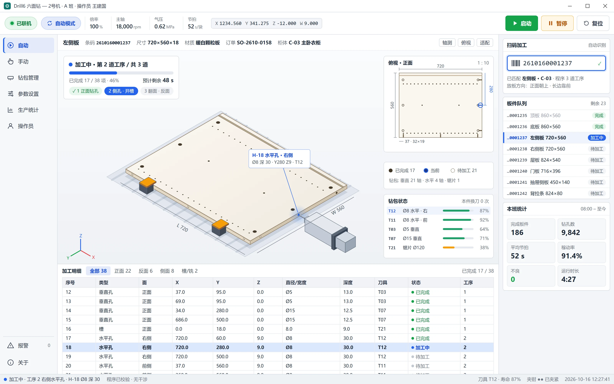

四款产品，覆盖板式加工的四个关键环节
每款产品都可以独立使用，并兼容工厂现有的设计拆单软件与加工设备；组合使用时，从订单到成品共享同一份零件数据。
SkNest
把整批柜体零件排成更省板、更好切的开料方案，每一张方案都能在开料锯上稳定落地。
- 快速 · 常规 · 最优三档优化
- 刀路预览、标签设计、报表一应俱全
- 导出主流品牌开料锯
SlwControl
运行在开料锯旁的控制软件：导入方案、预览仿真、驱动锯切、打印标签、回报进度，一屏掌握机台。
- 单推手、双推手、纵横锯流水线、开槽机型
- 支持自动贴标工位
- 10 种界面语言，触屏友好

YxCut 新品
弧形、L 形、带内孔的异形件按真实外形排版，一次生成开料机程序、标签和六面钻数据。
- 小件可排入大件内孔
- 孔、槽、挖槽、铣型一机完成
- 导出前自动安全复核

Drill6 新品
扫码即加工：参数化孔位、自动工艺规划、加工仿真，让六面钻上手快、不出错。
- 连接件、铰链、层板孔等五金模板库
- 板件尺寸改变，孔位自动跟随
- 加工前碰撞与越限检查
一个零件、一个条码，从订单走到成品
四款产品覆盖优化、开料、钻孔三大环节。零件数据沿产线逐站传递，不再重复录入，每台设备都以同一份数据为准。
订单拆单
对接设计拆单软件或 Excel 清单
优化排样
矩形件与异形件，按材质厚度自动分组
开料加工
电子锯或开料机，机台现场贴标
六面钻孔
扫码调取程序，完成剩余孔槽
分拣包装
凭标签追溯，直至交付
数据不落地重录
排样结果直达开料锯，开料机与六面钻的工序自动分配。
一件一码可追溯
每个零件从开料起就有自己的标签，任意工位都能补打、查询。
计划数字与现场一致
优化阶段给出的刀数、用时，与机台实际执行保持一致。
每一项提升，都用真实工厂订单验证
每个版本发布前，都用真实生产订单做对比验证；结果用厂长关心的单位说话：板数、刀数、工时。
更省料
每张板用得更满，可用余料自动登记、再次利用。
更高效
更合理的切割顺序，减少步数与掉头，缩短加工节拍。
更少出错
方案下发前自动复核数量、重叠、刀具与行程，问题挡在机台之外。
面向全球
多语言界面与 OEM 定制，助力设备厂商出海。
服务家具工厂，也服务设备制造商
板式家具工厂
全屋定制、橱柜衣柜、办公家具，从单台设备到整条产线。
- 兼容现有设计拆单软件
- 可先用自己的订单试用评估
- 上门部署与操作培训
设备制造商 OEM
为您的开料锯、开料机、六面钻配套成熟软件，以您的品牌出厂。
- 品牌标识、配色与机型定制
- 覆盖多种机型配置
- 灵活的授权方式
渠道与集成商
将成熟的软件产品线纳入您的方案，服务国内外客户。
- 售前演示与技术支撑
- 多语言产品与资料
- 渠道价格与区域支持
从第一张试用订单，到每天的稳定生产
方案评估
用您的真实订单跑出结果，量化可预期的省料与提效。
部署上线
软件安装、机型参数配置与操作培训，现场或远程均可。
定制适配
标签模板、报表格式、数据接口与新机型适配。
持续升级
定期发布新版本，持续增强功能，远程技术支持快速响应。